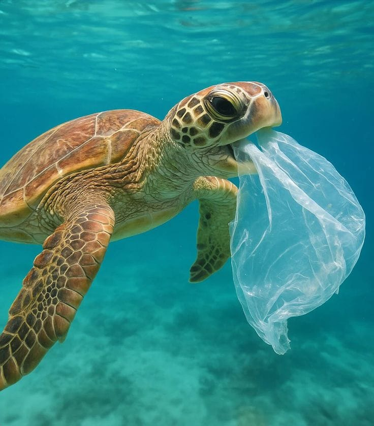
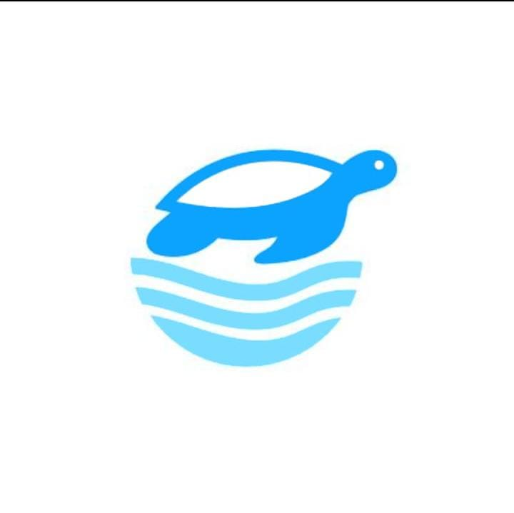
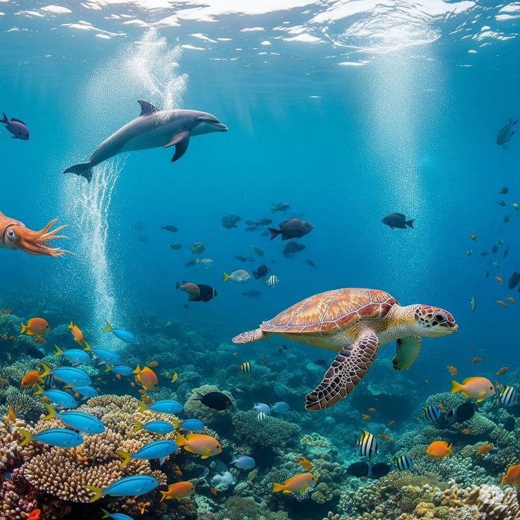

FUNÇÃO EMOCIONAL
Quando o lixo ameaça a vida.
Imagens de animais marinhos afetados pela poluição despertam empatia e ajudam o público a compreender as consequências do descarte incorreto.

OCEAN PEACEORGANIZAÇÃO DE PROTEÇÃO MARINHA
Conheça a Ocean Peace e a campanha Maré Limpa, criada para conscientizar sobre o descarte correto de resíduos e incentivar a proteção da vida marinha.

01 / SOBRE A OCEAN PEACE
A Ocean Peace é uma organização fictícia criada para representar ações de retirada de resíduos das praias e conscientização ambiental. Por meio da campanha Maré Limpa, queremos mostrar que cuidar do oceano depende de escolhas individuais e coletivas.
O futuro do oceano também depende de você.
Campanha Maré Limpa02 / O PROBLEMA
Resíduos descartados de maneira incorreta podem chegar aos rios, às praias e ao mar, afetando os ecossistemas e os animais marinhos.

FUNÇÃO EMOCIONAL
Imagens de animais marinhos afetados pela poluição despertam empatia e ajudam o público a compreender as consequências do descarte incorreto.
FUNÇÃO INFORMATIVA
Um resíduo jogado no chão pode ser levado pela chuva para bueiros, córregos e rios, chegando posteriormente ao ambiente marinho.
Ver dados e fontes ↗FUNÇÃO APELATIVA
A mensagem convida o público a agir: reduzir descartáveis, separar resíduos e manter praias e espaços públicos limpos.
Conhecer atitudes ↗03 / DADOS E PESQUISAS
Os números ajudam a tornar o problema visível. Antes de entregar o trabalho, confirme os dados nas fontes oficiais e ajuste os textos conforme a pesquisa do grupo.
Indicador usado no folder. Verifique a fonte e o contexto antes da versão final.
Número apresentado no folder sobre a chegada de plástico aos oceanos por ano.
Estimativa apresentada no folder sobre resíduos acumulados nas águas.
PESQUISA LOCAL
O folder cita a Lei nº 6.458, de 8 de janeiro de 2019. Consulte o texto oficial para conferir o artigo e a redação correta antes de publicar a informação.
04 / O QUE PODEMOS FAZER?
Organize plástico, papel, metal e outros materiais conforme a coleta disponível.
Prefira garrafas, sacolas e utensílios reutilizáveis sempre que possível.
Recolha resíduos do chão e descarte-os corretamente, mesmo quando não forem seus.
Converse com familiares e amigos sobre a importância de proteger os oceanos.
05 / FAÇA PARTE
Uma praia mais limpa começa antes do lixo chegar à areia.